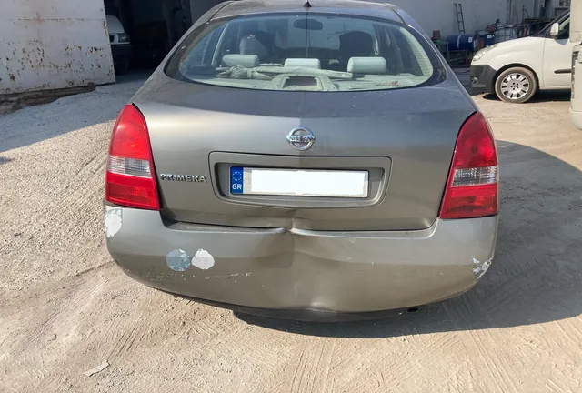
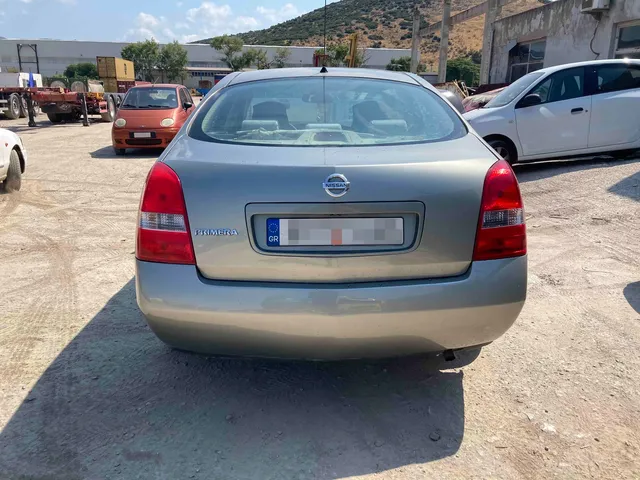

Διεκπεραίωση Ασφαλιστικών Υποθέσεων στον Βόλο
Μετά από ένα ατύχημα, το τελευταίο πράγμα που θέλει κανείς είναι να τρέχει πίσω από χαρτιά. Αναλαμβάνουμε εμείς την υπόθεση ζημιάς του οχήματός σας: φωτογράφιση, δικαιολογητικά, επικοινωνία με την ασφαλιστική εταιρεία και τον πραγματογνώμονα, και οργάνωση της επισκευής μέχρι την παράδοση του οχήματος.
Τι αναλαμβάνουμε
- Φωτογράφιση της ζημιάς με τον τρόπο που ζητά η ασφαλιστική, ώστε να μη χρειάζεται να ξαναπάει το όχημα.
- Συγκέντρωση και υποβολή των δικαιολογητικών της υπόθεσης.
- Επικοινωνία με την ασφαλιστική εταιρεία και συνεννόηση με τον πραγματογνώμονα για τον χρόνο και τον χώρο του ελέγχου.
- Κατάρτιση της προσφοράς εργασιών και ανταλλακτικών, όπως απαιτεί η διαδικασία.
- Συντονισμό της επισκευής και ενημέρωσή σας για την πορεία της υπόθεσης.
- Παράδοση του οχήματος επισκευασμένου, χωρίς να χρειαστεί να μεσολαβήσετε εσείς.
Τι χρειαζόμαστε από εσάς
Για να ξεκινήσει η υπόθεση χρειάζονται τα βασικά στοιχεία του συμβολαίου και του οχήματος. Συνήθως αρκούν τα παρακάτω - αν λείπει κάτι, θα σας το πούμε από την πρώτη συζήτηση:
- Ασφαλιστήριο ή τα στοιχεία του συμβολαίου και της ασφαλιστικής εταιρείας.
- Άδεια κυκλοφορίας του οχήματος.
- Στοιχεία του οδηγού, όπως ζητούνται από την ασφαλιστική.
- Τυχόν αναφορά ή φιλικό σημείωμα, καθώς και φωτογραφίες από το σημείο, αν υπάρχουν.
Πώς κυλάει η διαδικασία
- Επικοινωνείτε μαζί μας και μας περιγράφετε το συμβάν και τη ζημιά.
- Βλέπουμε το όχημα και φωτογραφίζουμε τη ζημιά, ώστε να υπάρχει πλήρης εικόνα από την αρχή.
- Ετοιμάζουμε τα δικαιολογητικά και ανοίγουμε την υπόθεση στην ασφαλιστική.
- Συνεννοούμε τον έλεγχο του πραγματογνώμονα, στον χώρο μας, χωρίς να χρειαστεί να πάτε εσείς πουθενά.
- Μετά την έγκριση, ξεκινά η επισκευή και σας ενημερώνουμε για την πρόοδο.
- Παραδίδουμε το όχημα επισκευασμένο, στο συνεργείο ή στον χώρο σας.


Ζημιά σε συνεργείο που δεν χρειάζεται να τρέξετε πουθενά
Ό,τι ακολουθεί μετά τη δήλωση - επισκευή αμαξώματος, βαφή για το ταίριασμα του χρώματος, ή επισκευή πλαισίου όταν η ζημιά είναι βαθύτερη - γίνεται στον ίδιο χώρο. Αν δεν μπορείτε να φέρετε το όχημα, το παραλαμβάνουμε και το επιστρέφουμε εμείς, δωρεάν, εντός Βόλου και Νέας Ιωνίας.
Συχνές ερωτήσεις
Τι γίνεται αν ο πραγματογνώμονας δεν εγκρίνει όλες τις εργασίες;
Συμβαίνει, και συνήθως αφορά τη μέθοδο επισκευής και όχι την ανάγκη για επισκευή. Σε αυτή την περίπτωση σας εξηγούμε τι εγκρίθηκε, τι όχι και γιατί, και συζητάμε μαζί σας τις επιλογές πριν προχωρήσει οτιδήποτε.
Πόσο διαρκεί η διαδικασία;
Εξαρτάται από την ασφαλιστική, από τον χρόνο του πραγματογνώμονα και από τα ανταλλακτικά. Επειδή η επικοινωνία γίνεται από εμάς, δεν χάνετε χρόνο σε τηλέφωνα και ραντεβού, και σας ενημερώνουμε στα βασικά στάδια.
Μπορώ να φέρω το όχημα μόνος μου;
Ασφαλώς. Μπορείτε να έρθετε στο συνεργείο στη Β' ΒΙΠΕ Βόλου και να ασχοληθούμε επιτόπου με την υπόθεση. Η παραλαβή από τον χώρο σας είναι προαιρετική.
Συνεργάζεστε με όλες τις ασφαλιστικές;
Ναι, η διαδικασία της υπόθεσης γίνεται με οποιαδήποτε ασφαλιστική εταιρεία. Το τι καλύπτει το συμβόλαιό σας το ορίζει η ασφαλιστική σας - εμείς φροντίζουμε να φτάσει η υπόθεσή σας σωστά και πλήρως.
Χρειάζεται να είμαι παρών στον έλεγχο του πραγματογνώμονα;
Όχι υποχρεωτικά. Συνήθως αρκεί να έχουμε το όχημα και τα δικαιολογητικά. Αν η ασφαλιστική ζητήσει την παρουσία σας, σας ενημερώνουμε εγκαίρως για τη μέρα και την ώρα.